Failed check: AssertionError [ERR_ASSERTION]: Ground contact route returns to the previously verified clear departure street
Both runs use 1440×900 headed Chrome and normal presentation quality. World positions, camera framing, orbit, lighting and asset residency may differ; compare the recorded states before interpreting timing differences. No image manipulation: full captures and native screenshot clips only. All poses and viewpoints use ordinary input. This is an isolated capability fixture, not earned progression.
Read exact checks and observations · 23 checks recorded · 0 raw browser console/runtime errors · 0 unclassified or unrecovered HTTP failures · 0 recovered save-busy responses
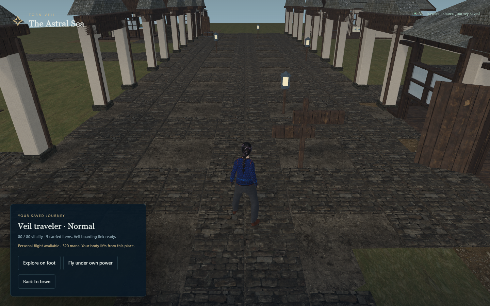
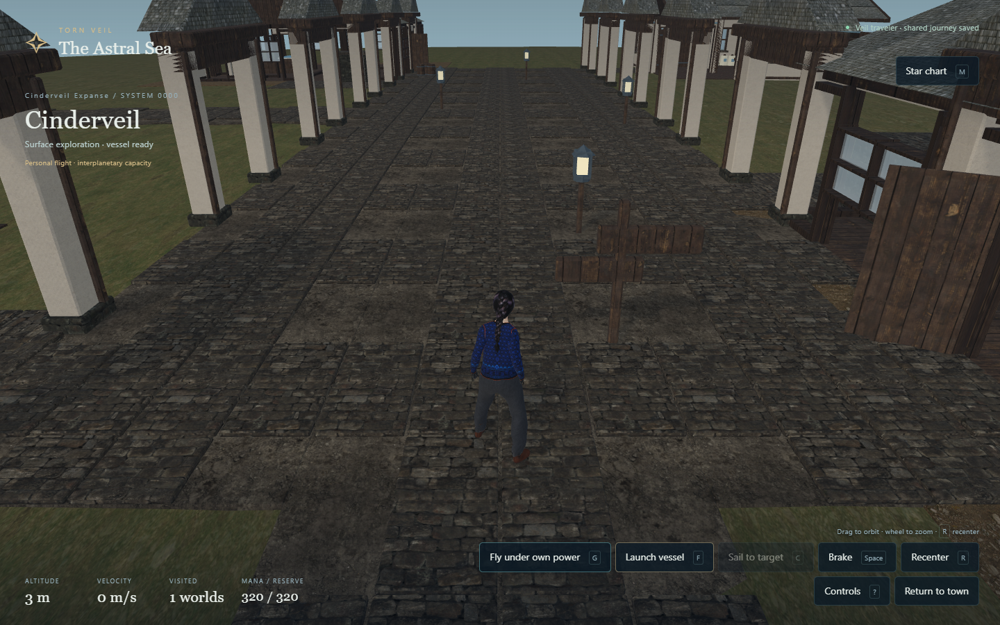
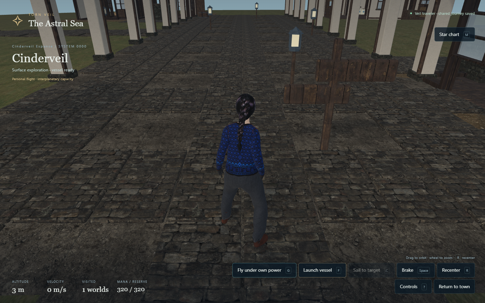
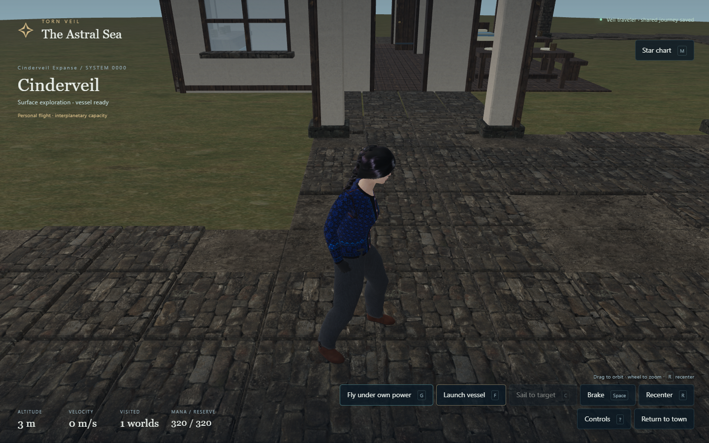
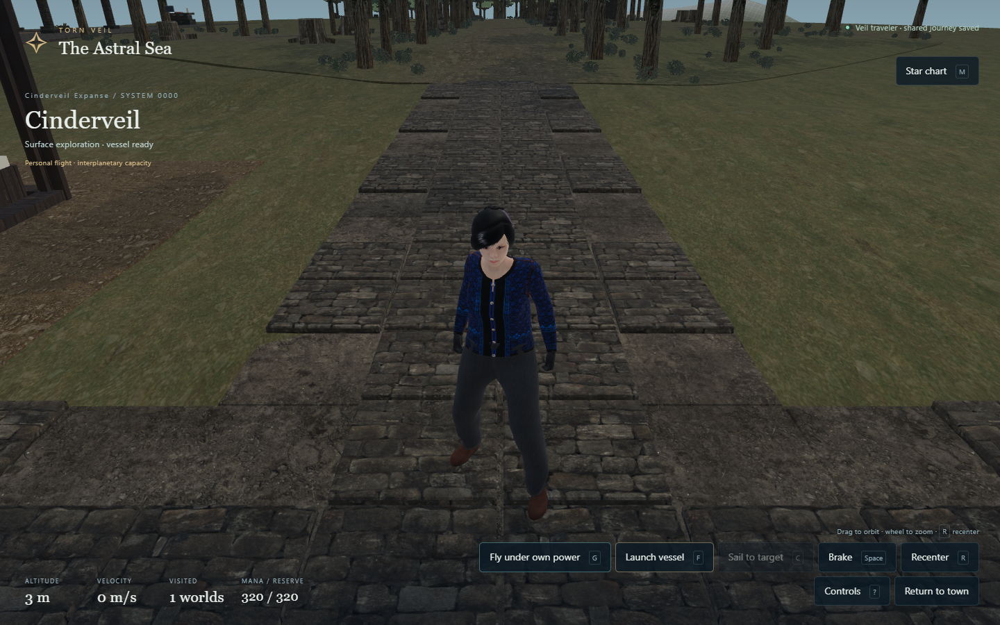
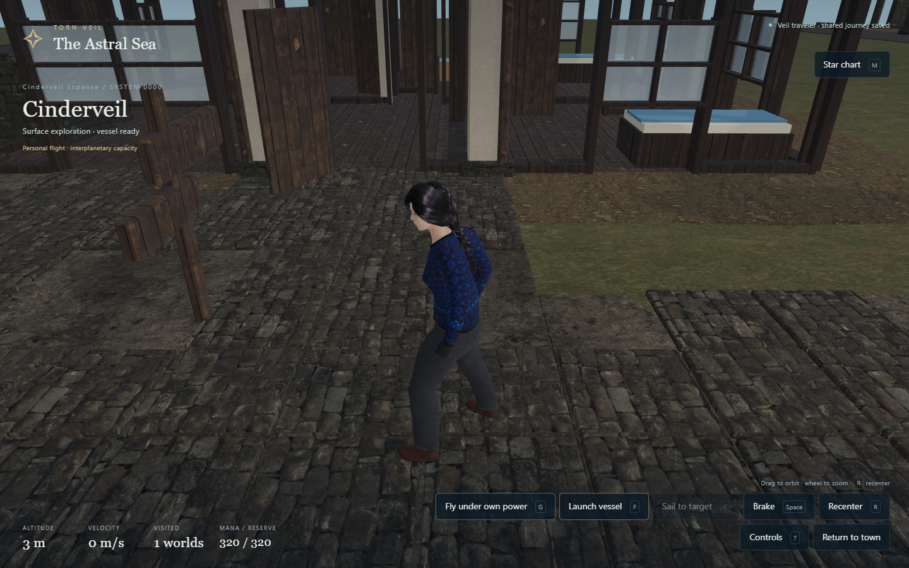
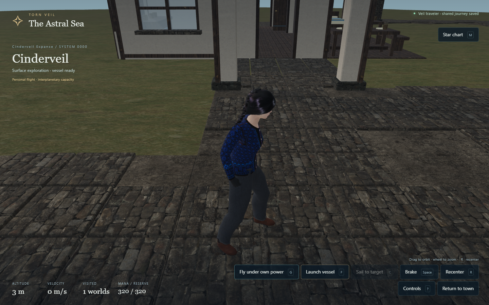
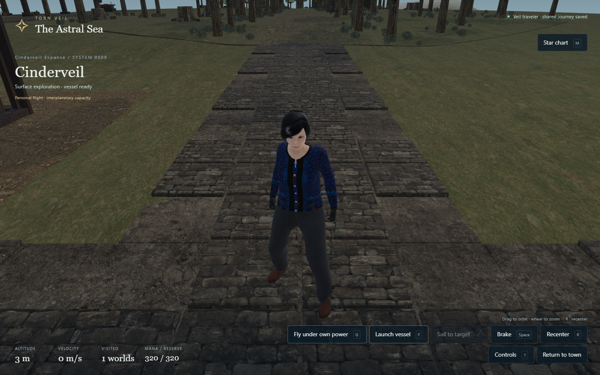
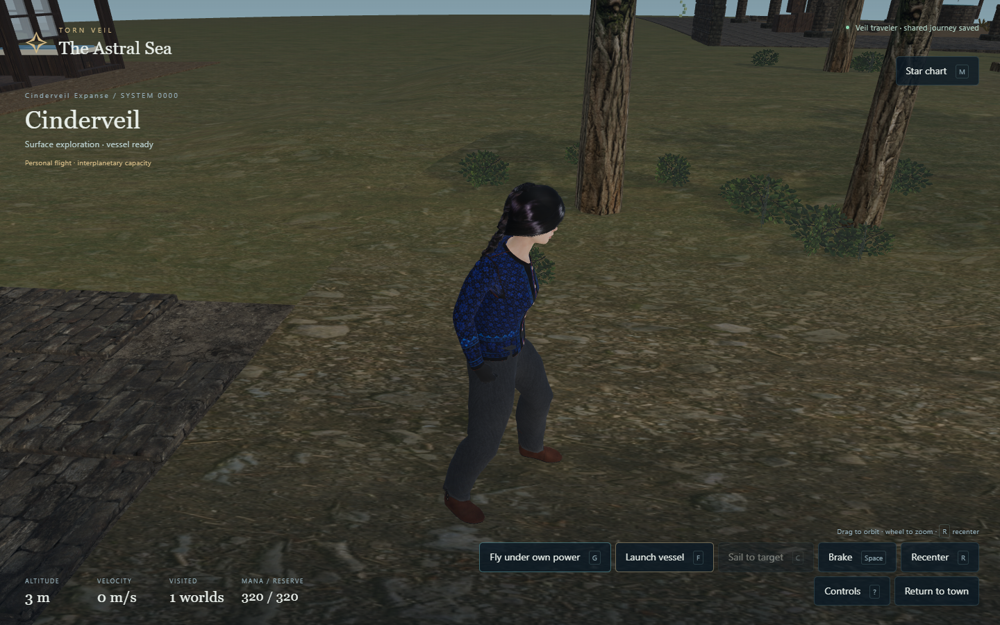
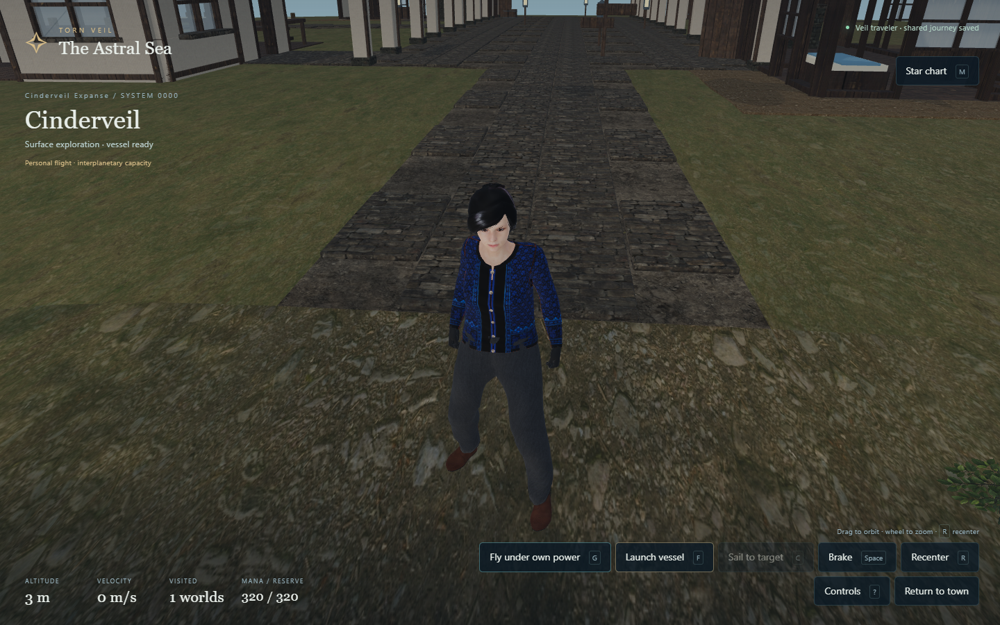
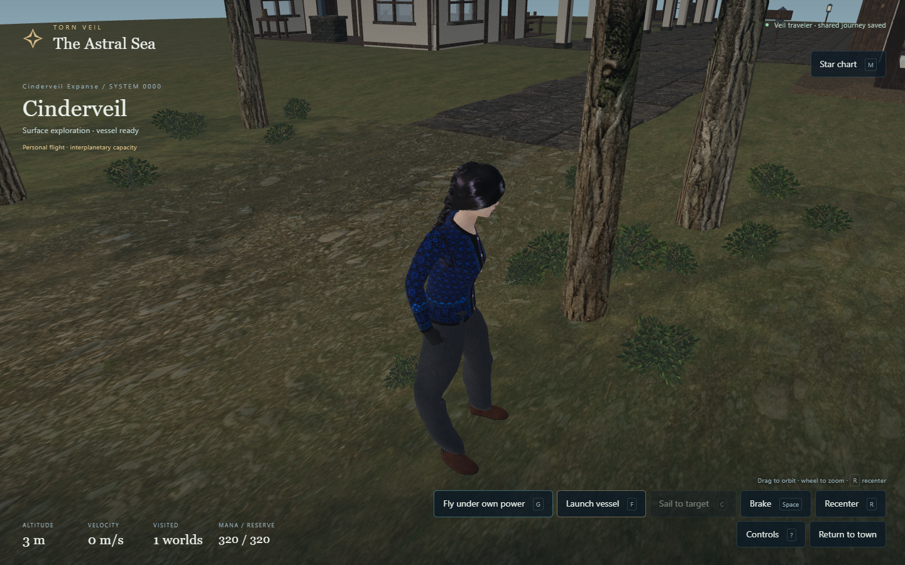
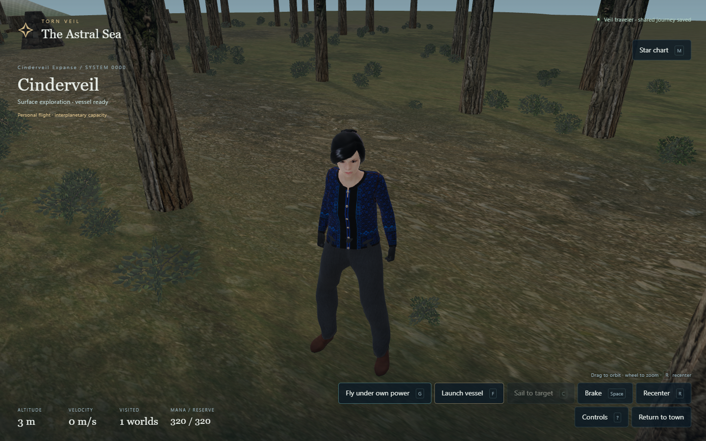
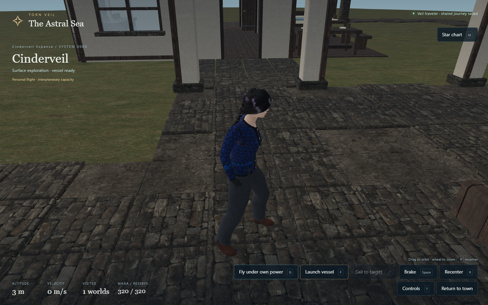
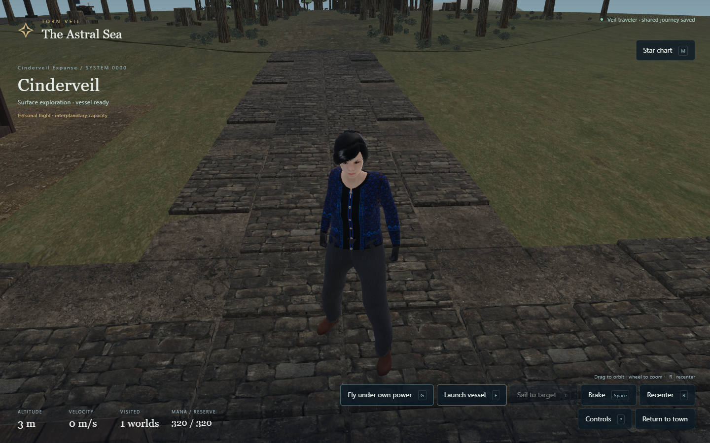
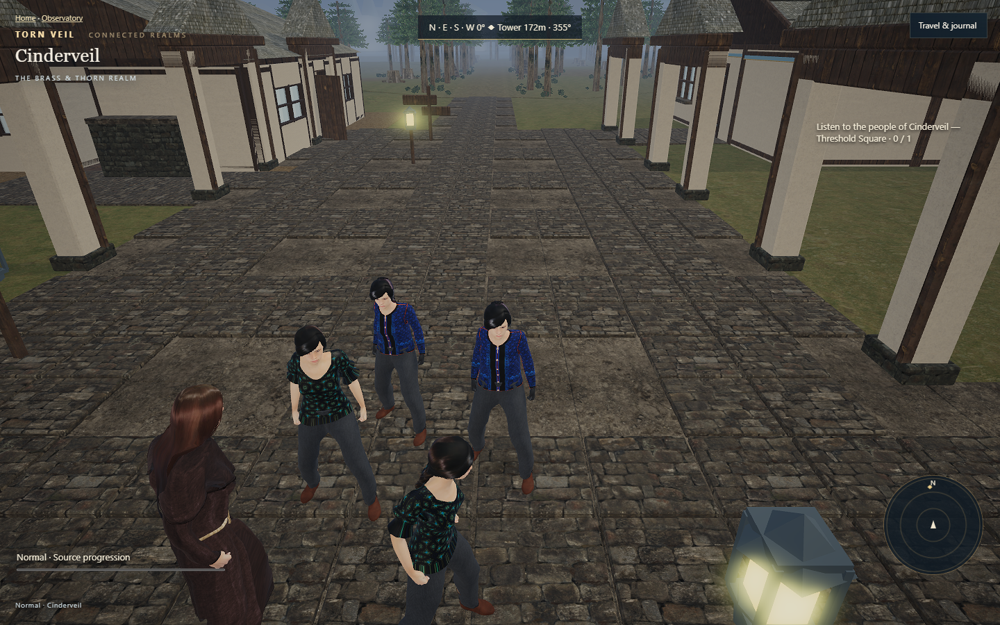
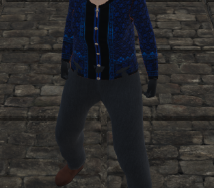
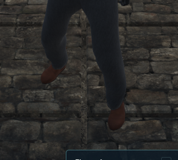
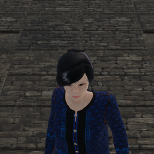
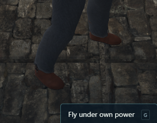
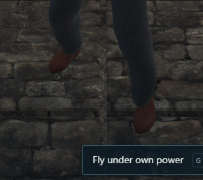
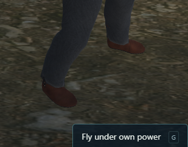
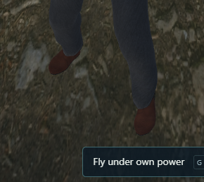
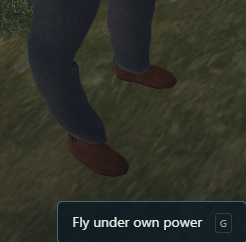
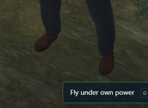
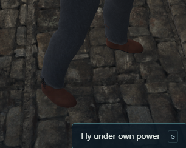
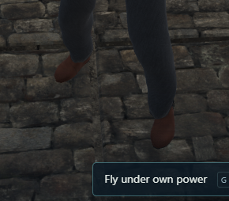
Each timing sample contains120 animation frames. A requested animation name alone is not evidence of its source. Verified source IDs, actual source clips, destination rigs and hashes appear below.
| Capture | Frame p50 / p95 ms | Draws | Source / actual clip | Rig | Flight pose |
|---|---|---|---|---|---|
| 01-town-preview | 21.0 / 41.7 | 847 | quaternius-ual-standard / Idle_Loop | wren | ground |
| 02-ground-default | 20.8 / 27.8 | 849 | quaternius-ual-standard / Idle_Loop | wren | ground |
| 03-ground-close-back | 20.7 / 27.7 | 800 | quaternius-ual-standard / Idle_Loop | wren | ground |
| 04-ground-close-side-a | 20.8 / 27.7 | 537 | quaternius-ual-standard / Idle_Loop | wren | ground |
| 05-ground-close-front | 20.8 / 27.7 | 728 | quaternius-ual-standard / Idle_Loop | wren | ground |
| 06-ground-close-side-b | 20.8 / 27.8 | 600 | quaternius-ual-standard / Idle_Loop | wren | ground |
| contact-flat-side | 20.8 / 27.7 | 532 | quaternius-ual-standard / Idle_Loop | wren | ground |
| contact-flat-front | 20.8 / 27.7 | 719 | quaternius-ual-standard / Idle_Loop | wren | ground |
| contact-step-side | 20.8 / 27.8 | 440 | quaternius-ual-standard / Idle_Loop | wren | ground |
| contact-step-front | 20.9 / 34.7 | 1039 | quaternius-ual-standard / Idle_Loop | wren | ground |
| contact-slope-side | 27.7 / 34.8 | 866 | quaternius-ual-standard / Idle_Loop | wren | ground |
| contact-slope-front | 20.9 / 27.9 | 373 | quaternius-ual-standard / Idle_Loop | wren | ground |
| contact-returned-flat-side | 20.8 / 27.8 | 534 | quaternius-ual-standard / Idle_Loop | wren | ground |
| contact-returned-flat-front | 20.8 / 27.8 | 694 | quaternius-ual-standard / Idle_Loop | wren | ground |
{"source":"quaternius-ual-standard","file":"motion/ual-standard.glb","sourceClip":"Idle_Loop","retargetLook":"wren","sha256":"69591853d817488edaa8fd9bf8fc1d821eaeaf789f8627b3cd23b41c4ed67997","license":"CC0-1.0"}One machine, one generated system and one endowed character. The gallery does not certify every asset, body, seed, ability capacity or collision configuration. Optional private motion packs may be unavailable; their HTTP results and truthful fallbacks are recorded separately. Camera-frustum asset IDs do not prove unoccluded pixels. Lighting and mesh/rig observations still require visual review.